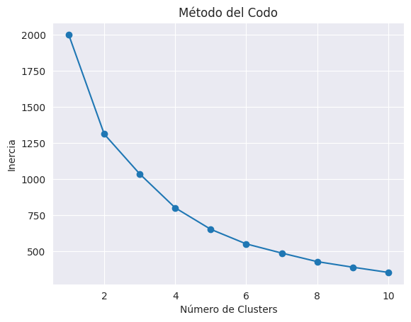

from pandas import read_csv, DataFrameContex
Una empresa financiera tiene un nuevo producto dirigido a sus clientes con diferentes límites de crédito, por ello, es necesario dividir a los clientes en grupos más pequeños.
Desafortunadamente, los directivos no tienen idea de cuál es la cantidad óptima en la que se puede segregar a los clientes y cómo dirigir a nuevos clientes a esos grupos.
Es por eso que en este punto se te ha contratado. Para poder ejecutar tu trabajo te han compartido una base de datos que contiene las características que, según sus informes, son los más importantes para la aplicación de este programa. Consiste en seis puntos: - Salario mensual: indica el ingreso mensual del cliente en pesos mexicanos. - Crédito tipo 1: es un producto financiero que el cliente ha obtenido de la institución financiera; 1 significa que tiene este producto y 0 que no cuenta con él. - Crédito tipo 2: es similar a las características del anterior; 1 significa que cuenta con el producto y 0 que no. - Límite de TC: indica el límite de crédito de la tarjeta del cliente. - Años siendo cliente: corresponde al tiempo que el cliente ha tenido una relación comercial con la institución financiera. - Previamente se ofreció el producto: es la versión previa del producto e indica si el cliente se mostró interesado en obtenerlo (1) o no (0).
El archivo puede ser descargado aquí: https://drive.google.com/file/d/1wcjPCZPTMuDlyWcE1Do4-yqU5AglW_p9/view?usp=sharing
Import Libraries
from numpy import where, arange, cumsumfrom sklearn.preprocessing import StandardScaler
from sklearn.pipeline import Pipeline
from sklearn.cluster import (KMeans,
AgglomerativeClustering,
DBSCAN,
)
from sklearn.decomposition import PCA
from sklearn.metrics import (silhouette_score,
calinski_harabasz_score,
davies_bouldin_score,
)import matplotlib.pyplot as plt
import plotly.express as px
import plotly.graph_objects as gofrom seaborn import (boxplot,
distplot,
set_style,
displot,
countplot,
scatterplot,
barplot,
lmplot,
heatmap,
)import scipy.cluster.hierarchy as shcfrom google.colab import drive
drive.mount('/content/drive')Mounted at /content/driveimport warnings
warnings.filterwarnings('ignore')!pip install kneed
from kneed import KneeLocatorCollecting kneed
Downloading kneed-0.8.5-py3-none-any.whl (10 kB)
Requirement already satisfied: numpy>=1.14.2 in /usr/local/lib/python3.10/dist-packages (from kneed) (1.25.2)
Requirement already satisfied: scipy>=1.0.0 in /usr/local/lib/python3.10/dist-packages (from kneed) (1.11.4)
Installing collected packages: kneed
Successfully installed kneed-0.8.5Load Data
df = read_csv('/content/drive/MyDrive/Colab Notebooks/proyectos/costumers.csv')
display(df.head())| Salario | Credito_tipo_1 | Credito_tipo_2 | Limite_TC | Tiempo_cliente | Producto_ofrecido | |
|---|---|---|---|---|---|---|
| 0 | 22572.91 | 1 | 0 | 30136.74 | 0.0 | 1 |
| 1 | 10609.64 | 1 | 1 | 53623.94 | 0.0 | 1 |
| 2 | 10079.48 | 0 | 1 | 18135.44 | 0.0 | 0 |
| 3 | 13871.35 | 1 | 0 | 30831.75 | 0.0 | 1 |
| 4 | 6541.46 | 0 | 1 | 20626.23 | 0.0 | 0 |
Definimos nuestro DataFrame como df y observamos las primeras cinco muestras
EDA
df.describe(include='all').T| count | mean | std | min | 25% | 50% | 75% | max | |
|---|---|---|---|---|---|---|---|---|
| Salario | 500.0 | 12089.09738 | 5123.700116 | -2911.65 | 8534.350 | 11438.600 | 15171.4675 | 30041.40 |
| Credito_tipo_1 | 500.0 | 0.61000 | 0.488238 | 0.00 | 0.000 | 1.000 | 1.0000 | 1.00 |
| Credito_tipo_2 | 500.0 | 0.45800 | 0.498732 | 0.00 | 0.000 | 0.000 | 1.0000 | 1.00 |
| Limite_TC | 500.0 | 44784.55496 | 22150.923996 | -22207.95 | 30096.285 | 47991.515 | 59108.1750 | 118636.82 |
| Tiempo_cliente | 500.0 | 4.32700 | 4.784776 | 0.00 | 0.000 | 0.000 | 8.4000 | 19.30 |
| Producto_ofrecido | 500.0 | 0.60200 | 0.489976 | 0.00 | 0.000 | 1.000 | 1.0000 | 1.00 |
Observemos las estadisticas descritivas de nuestro dataset, podemos observar que las columnas Salario y Limite_TC sus valores minimos son negativos, lo cual no tiene sentido.
df.info()<class 'pandas.core.frame.DataFrame'>
RangeIndex: 500 entries, 0 to 499
Data columns (total 6 columns):
# Column Non-Null Count Dtype
--- ------ -------------- -----
0 Salario 500 non-null float64
1 Credito_tipo_1 500 non-null int64
2 Credito_tipo_2 500 non-null int64
3 Limite_TC 500 non-null float64
4 Tiempo_cliente 500 non-null float64
5 Producto_ofrecido 500 non-null int64
dtypes: float64(3), int64(3)
memory usage: 23.6 KBAca mostramos la información general de nuestro dataset, desde el total de muestras hasta el tipo de dato.
df.isnull().sum()Salario 0
Credito_tipo_1 0
Credito_tipo_2 0
Limite_TC 0
Tiempo_cliente 0
Producto_ofrecido 0
dtype: int64Mostramos la completitud de nuestro dataset, en este caso no contiene valores faltantes.
Comprobamos valores atípicos
fig = px.box(df, y="Salario", points="all", width=700, height=550)
fig.show()fig = px.box(df, y="Limite_TC", points="all", width=700, height=550)
fig.show()Mediante las graficas de cajas se pueden observar numerosos valores atípicos en ambas columnas. Tambien se observan valores negativos en las columnas que no tienen sentido, por ejemplo un salario negativo
arg_min_sal = df.iloc[df['Salario'].argmin()]# Localizamos y mostramos los valores mínimos
arg_min_limt = df.iloc[df['Limite_TC'].argmin()]
print(f'Los montos mínimos de Salario son \n{arg_min_sal}.\n==================================\nY del limite de credito \n{arg_min_limt}.')Los montos mínimos de Salario son
Salario -2911.65
Credito_tipo_1 1.00
Credito_tipo_2 1.00
Limite_TC 86358.80
Tiempo_cliente 0.00
Producto_ofrecido 1.00
Name: 472, dtype: float64.
==================================
Y del limite de credito
Salario 29868.76
Credito_tipo_1 0.00
Credito_tipo_2 0.00
Limite_TC -22207.95
Tiempo_cliente 0.00
Producto_ofrecido 1.00
Name: 478, dtype: float64.Al igual que la columna de limite de credito, cuenta con un limite negativo
# Definir límites inferior y superior
qs = df.quantile([0.25,0.5,0.75]).values
q1 = qs[0][0]
q2 = qs[1][0]
q3 = qs[2][0]
iqr = q3-q1
iqr_lim_inf = q1 - 1.285*iqr# Modifique el limite inferior de manera que me diera el monto positivo mas cercano a 1Definimos variables con los rangos intercuartilicos, y estructuramos los limites inferiores, que son los que usaremos
# Y realizar el recorte en este caso a salario y graficamos de nuevo
df['Salario'] = where(df['Salario']<iqr_lim_inf,
iqr_lim_inf, df['Salario'])
fig = px.box(df, y='Salario', points='all', width = 700, height=500)
fig.show()# Y realizar el recorte a la columna de limite de credito, y ahora se ve así
df['Limite_TC'] = where(df['Limite_TC']<iqr_lim_inf,
iqr_lim_inf, df['Limite_TC'])
fig = px.box(df, y='Limite_TC', points='all', width = 700, height=500)
fig.show()arg_min_sal = df.iloc[df['Salario'].argmin()]
arg_min_limt = df.iloc[df['Limite_TC'].argmin()]
print(f'Los montos mas bajos de Salario son \n{arg_min_sal}.\n==================================\nY del limite de credito \n{arg_min_limt}.')Los montos mas bajos de Salario son
Salario 5.654013
Credito_tipo_1 1.000000
Credito_tipo_2 1.000000
Limite_TC 86358.800000
Tiempo_cliente 0.000000
Producto_ofrecido 1.000000
Name: 472, dtype: float64.
==================================
Y del limite de credito
Salario 24295.710000
Credito_tipo_1 1.000000
Credito_tipo_2 0.000000
Limite_TC 5.654013
Tiempo_cliente 0.000000
Producto_ofrecido 0.000000
Name: 47, dtype: float64.Ahora las columnas tienen mas sentido, con valores positivos.
Univariate analysis
df.columnsIndex(['Salario', 'Credito_tipo_1', 'Credito_tipo_2', 'Limite_TC',
'Tiempo_cliente', 'Producto_ofrecido'],
dtype='object')Salario colum
plt.figure(figsize=(8,6))
set_style('darkgrid')
displot(df, x="Salario", kde=True)
plt.title("Distribución de Salario\n========================================", fontsize=20, color="blue")
plt.xlabel("Rango de Salario", fontsize=15)
plt.ylabel("Densidad", fontsize=15)
plt.show()<Figure size 800x600 with 0 Axes>La mayor parte de los salarios se encuentran entre los 8.000 y 15.000
Credito tipo 1
df['Credito_tipo_1'].unique()array([1, 0])plt.figure(figsize=(6,4))
df['Credito_tipo_1'].value_counts().plot(kind='bar', color=['blue', 'red'])
plt.xlabel('Aprobado No aprobado')
plt.ylabel('Cantidad')
plt.title('Credito tipo 1')
plt.xticks(rotation=0)
plt.show()plt.figure(figsize=(6,6))
df['Credito_tipo_1'].value_counts().plot(kind='pie', autopct='%1.1f%%', startangle=140)
plt.title('Creditos tipo 1')
plt.ylabel('')
plt.show()Podemos observar que tiene mayor tasa de aprobación credito tipo 1.
Credito tipo 2
df['Credito_tipo_2'].nunique()2plt.figure(figsize=(6,4))
df['Credito_tipo_2'].value_counts().plot(kind='bar', color=['blue', 'red'])
plt.xlabel(' No Aprobado Aprobado')
plt.ylabel('Cantidad')
plt.title('Credito tipo 2')
plt.xticks(rotation=0)
plt.show()plt.figure(figsize=(6,6))
df['Credito_tipo_2'].value_counts().plot(kind='pie', autopct='%1.1f%%', startangle=140)
plt.title('Creditos tipo 2')
plt.ylabel('')
plt.show()A diferencia del credito tipo 1, este credito tipo 2 su tasa de aceptación es un poco mas baja.
Limite_TC colum
plt.figure(figsize=(8,6))
set_style('darkgrid')
displot(df, x="Limite_TC", kde=True)
plt.title("Distribución de Limite de Credito\n=====================================", fontsize=20, color="blue")
plt.xlabel("Rango de Limite de Credito", fontsize=15)
plt.ylabel("Densidad", fontsize=15)
plt.show()<Figure size 800x600 with 0 Axes>La mayor parte del limite de credito estan entre los 45.000 y 60.000. Y hay una cantidad considerable las cuales no cuentan con credito.
Tiempo cliente colum
df['Tiempo_cliente'].value_counts()Tiempo_cliente
0.0 254
7.0 8
7.2 7
7.3 7
8.5 6
...
15.0 1
13.1 1
7.8 1
10.6 1
15.3 1
Name: count, Length: 88, dtype: int64plt.figure(figsize=(10,6))
set_style('darkgrid')
displot(df, x="Tiempo_cliente", kde=True)
plt.title("Distribución de tiempo del cliente\n=============================================", fontsize=20, color="blue")
plt.xlabel("Rango de tiempo", fontsize=15)
plt.ylabel("Densidad", fontsize=15)
plt.show()<Figure size 1000x600 with 0 Axes>La distribución no esta nada pareja y fluctua de manera particual, aqui nos muestra que la gran mayoria cuentan con 0-1 año siendo cliente, luego entre los 7-11 años su segundo peack.
Producto ofrecido
df['Producto_ofrecido'].value_counts()Producto_ofrecido
1 301
0 199
Name: count, dtype: int64plt.figure(figsize=(6,4))
df['Producto_ofrecido'].value_counts().plot(kind='bar', color=['blue', 'red'])
plt.xlabel(' Aprobado No aprobado')
plt.ylabel('Cantidad')
plt.title('Producto ofrecido')
plt.xticks(rotation=0)
plt.show()En su mayoria se cuenta con clientes con el producto ofrecido.
Analisis bivariado
df.columnsIndex(['Salario', 'Credito_tipo_1', 'Credito_tipo_2', 'Limite_TC',
'Tiempo_cliente', 'Producto_ofrecido'],
dtype='object')corr = df.corr()
heatmap(corr, annot=True, cmap='coolwarm', vmin=-1, vmax=1)
plt.title('Mapa de Calor de Correlación')
plt.show()Acá podemos observar un mapa de calor con la correlación de nuestras features, logramos ver la mayor relacion que seria Limite_TC con Tiempo_cliente, nos indica que mientras mas tiempo se este en el banco en este caso, incrementa el limite crediticio; seguido con Credito_tipo_1 y por ultimo con Producto_ofrecido, nos indica que mientras mas tiempo siendo cliente, la tasa de aceptación de producto incrementa.
plt.figure(figsize=(10, 6))
scatterplot(data=df, x='Tiempo_cliente', y='Limite_TC', marker='o')
# Añadir títulos y etiquetas
plt.title('Relación entre Limite credito y Periodo de Tiempo del Cliente')
plt.xlabel('Periodo de Tiempo del Cliente (años)')
plt.ylabel('Limite credito')
plt.grid(True)hay una concentración significativa de puntos a la izquierda del eje X (en el periodo de tiempo cercano a 0), indicando que hay muchos clientes con un periodo de tiempo muy corto.
Se observa una tendencia ligera de incremento en el límite de crédito a medida que aumenta el periodo de tiempo del cliente. Los clientes que han estado más tiempo tienden a tener límites de crédito más altos.
plt.figure(figsize=(8,6))
set_style('darkgrid')
scatterplot(data=df, x="Salario", y= "Limite_TC", hue="Producto_ofrecido", s=65, alpha= 0.8)
plt.title("Salario vs Limite de Credito\n===================================", fontsize=20, color="blue")
plt.xlabel("Salario", fontsize=15)
plt.ylabel("Limite de credito", fontsize=15)
plt.show()Aplicamos una grafica de dispersión con los features Salario y Limite de credito, con el parametro de producto ofrecido para ver su comportamiento. Podemos ver que los que las personas con mayor limite de credito tienden a tener el producto ofrecido, mientras que las personas con menos limite tienden a no poseerlo.
df.groupby(['Producto_ofrecido', 'Credito_tipo_1']).size().unstack().plot(kind='bar', stacked=True)
plt.xlabel('Producto ofrecido')
plt.ylabel('Frecuencia')
plt.title('Gráfico de Barras Apiladas')
plt.show()Podemos ver que los que cuentan con el Credito tipo 1, en su mayoria cuentan con el producto ofrecido, y en su minoria, los que no cuentan con el Credito tipo 1
Data preprocessing
df.head()| Salario | Credito_tipo_1 | Credito_tipo_2 | Limite_TC | Tiempo_cliente | Producto_ofrecido | |
|---|---|---|---|---|---|---|
| 0 | 22572.91 | 1 | 0 | 30136.74 | 0.0 | 1 |
| 1 | 10609.64 | 1 | 1 | 53623.94 | 0.0 | 1 |
| 2 | 10079.48 | 0 | 1 | 18135.44 | 0.0 | 0 |
| 3 | 13871.35 | 1 | 0 | 30831.75 | 0.0 | 1 |
| 4 | 6541.46 | 0 | 1 | 20626.23 | 0.0 | 0 |
df.drop(columns=['Credito_tipo_1', 'Credito_tipo_2'], inplace=True)Scaling
scaler = StandardScaler()
df_scaled = scaler.fit_transform(df)definimos el metodo de escalamiento que usaremos, en este caso Z-score, como tenemos valores atípicos que creo que son importantes, nos sera mas utíl por su robustez y eficiencia ante valores atípicos
Elbow method
inertia = [] # Lista vacía
for i in range(1, 11):# Bucle for en rango de 1 a 10 para instanciar en cada valor, luego guardar resultados en lista vacía
kmeans = KMeans(n_clusters=i, random_state=42)
kmeans.fit(df_scaled)
inertia.append(kmeans.inertia_)
# Graficar el codo
plt.plot(range(1, 11), inertia, marker='o')
plt.title('Método del Codo')
plt.xlabel('Número de Clusters')
plt.ylabel('Inercia')
plt.show()
Aplicaremos metodo del codo para buscar el valor optimo de K mediante la inercía, se toma el valor en el cual la grafica se inclina mas, en este caso usaremos K=4
Knee method
kneedle = KneeLocator(range(1,11), inertia, curve='convex', direction='decreasing')
elbow_point = kneedle.elbow
print(elbow_point)4Como segunda opción usaremos el metodo de ‘rodilla’ que igualmente hace uso de la inercia y así arrojar el valor optimo de K
PCA
#n_components = 2
pca = PCA(n_components=2)
scaled_pca = pca.fit_transform(df)
print(pca.explained_variance_ratio_)[0.95320342 0.04679656]Para una mejor visualización de los Cluster usaremos una reducción de dimensiones con PCA, se lo aplicaremos en nuestro dataset escalado
KMeans cluster
#K = 4
kmeans = KMeans(n_clusters=4,
random_state=40).fit(scaled_pca)
df_pca = DataFrame(scaled_pca, columns=['PCA1', 'PCA2'])
df['Cluster'] = kmeans.labels_
df_pca['Cluster'] = kmeans.labels_Instanciamos y ajustamos nuestro metodo de clustering, en este caso KMeans, y usaremos el valor optimo K=4 que nos arrojo los metodos anteriores, luego creamos un dataframe que contendra los componentes principales, y visualizarlo de manera mas facíl, agregando una columna de las agrupaciones(cluster)
plt.figure(figsize=(8, 6))
scatterplot(x='PCA1', y='PCA2', hue='Cluster', data=df_pca, palette='viridis')
plt.title('Visualización de Clusters')
plt.show()Creamos un dataframe que contenga los dos componentes principales y la columna de Cluster creada con KMeans, para observar como se comporta y sus agrupaciones
plt.figure(figsize=(8, 6))
scatterplot(x='Salario', y='Limite_TC', hue='Cluster', data=df, palette='viridis')
plt.title('Visualización de Clusters')
plt.show()Usamos la misma grafica anterior, con la diferencia que la aplicamos al dataframe original escalado, podemos ver que cambian las agrupaciones
Agglomerative Clustering
# Aplicar Agglomerative Clustering
agglomerative_clustering = AgglomerativeClustering(n_clusters=4,
affinity='euclidean',
linkage='ward')
df['Cluster'] = agglomerative_clustering.labels_
scaled_pca['Cluster'] = agglomerative_clustering.labels_Para tener una idea diferente usaremos otra tecnica de clustering, en este caso usaremos Agglomerative clustering
plt.figure(figsize=(8, 6))
scatterplot(data=df_pca, x='PCA1', y='PCA2', hue='Cluster', palette='viridis', s=50)
plt.title('Visualización de Clusters con Agglomerative Clustering')
plt.xlabel('PCA1')
plt.ylabel('PCA2')
plt.legend(title='Cluster')
plt.show()Aplicamos una grafica de dispersión, en este caso al dataframe con los componentes principales.
plt.figure(figsize=(8, 6))
scatterplot(data=df, x='Salario', y='Limite_TC', hue='Cluster', palette='viridis', s=50)
plt.title('Visualización de Clusters con Agglomerative Clustering')
plt.xlabel('Salario')
plt.ylabel('Limite_TC')
plt.legend(title='Cluster')
plt.show()Y al igual que las graficas anteriores, acá se la aplcamos al dataframe original con las muestras escaladas.
Aplicación de metricas de desempeño
silhouette_avg = silhouette_score(df, df['Cluster'])
db_score = davies_bouldin_score(df, df['Cluster'])
ch_score = calinski_harabasz_score(df, df['Cluster'])
print(f'Índice de Silueta: {silhouette_avg}')
print(f'El coeficiente del índice Calinski-Harabasz es de {ch_score}.')
print(f'El coeficiente del índice Davies-Bouldin es de {db_score}.')Índice de Silueta: 0.45615259890267384
El coeficiente del índice Calinski-Harabasz es de 943.0221360184264.
El coeficiente del índice Davies-Bouldin es de 0.7033885733580293.- Un valor de silueta más cercano a 1 indica un mejor rendimiento
- Con la metrica davies_bouldin un valor más alto es mejor
- La metrrica de calinski nos dice que un valor más bajo es mejor
Conclusion
Como pudimos observar en el desarrollo de este pequeño proyecto, estabamos trabajando con un dataset bastante pequeño en el cual eran muetras bancarias; hicimos un analisis exploratorio de datos los cuales nos arrojo insights interesantes: - Pudimos descubrir errores en la calidad de los datos, ya que habian salarios y limite de credito con valores negativos - Los años siendo cliente tienen importancia, ya que mientras mas tiempo formes parte siendo cliente tu limite de credito sera mas alto - El salario no juega un papel tan importante, ya que no tienen mucha relación el salario con otras caracteristicas, influye más el tiempo de clientes. - Por no contar con un dataset con mas muestras no se pudo conseguir un buen desempeño con nuestros modelos de modelado no supervisado - Mediante el desarrollo de nuestro modelo pudimos encontrar el numero optimo de segmentación, en este caso fue de 4* - En este caso pudimos emplear dos tecnicas diferentes para agrupar las muestras, pudimos observar aquellos clientes que cuentan con un salario muy alto no cuentan limite de credito tan altos, por otra parte, aquellos clientes con sueldos bajos-moderados cuentan con un limite de credito mucho mas alto.